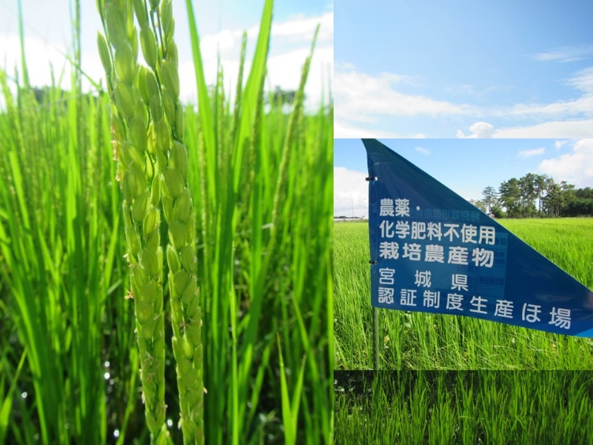
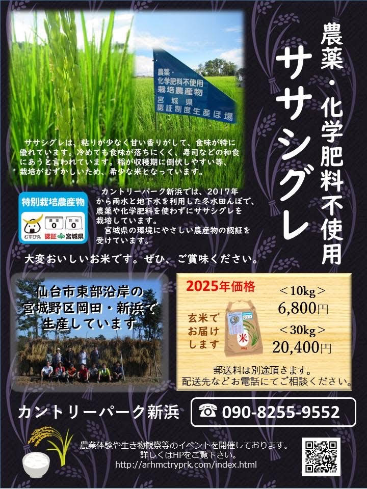
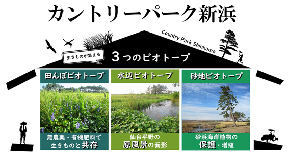
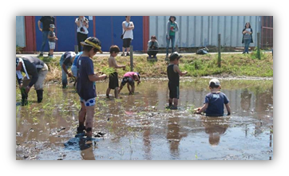

活動内容
カントリーパーク新浜の主な取り組みは以下の４つです。
四季を通じてさまざまな活動を地域の関連団体とも連携して実施してきました。
当団体の1年間の活動概要はこちらの動画をご覧ください↓↓
1.農薬・化学肥料不使用の米作り
除草剤・駆虫薬などの農薬や化学肥料を使わずに、深水栽培などの工夫をして米作りをしています。
4月：育苗、5月初旬：しろかき、5月中~下旬：ササシグレ・ミヤココガネ（もち米）の田植え、6-7月：草取り、10月上～中旬：稲刈り、11月下旬：米ぬか散布・耕運というのが1年間のおよその米作りスケジュールです。
今はあまり見られなくなったミズアオイなどの貴重な生物も見られます。手作業でやる仕事が多く大変なので、ぜひご協力ください!!

2.安心なお米の販売
「みやぎの環境にやさしい農産物認証」をうけています。10月中旬より販売しております。当団体の会員へ優先して提供しており、販売できる量には限りがありますので予めご了承ください。予約も受けつけております。
栽培品種： ササシグレ
【ササシグレについて】
ササシグレは、昭和30年代までは東北地方の多くの地域で栽培されていました。その後、その子供にあたるササニシキにその座を譲り、昭和40年代にはほとんどの田んぼから姿を消しました。現在は、ごく一部の限られた生産者だけがササシグレを大切に栽培しており、食通を中心に熱烈な支持され「幻の高級米」と言われています。

3.海岸地域の自然保護
震災後、新浜地区は仙台市で一番海に近い集落になりました。震災にも耐え、残された海辺ならではの自然の回復を後押しできるよう、外部の専門家と連携して情報を得ながら、在来種の育成・繁殖など、ビオトープに避難所的な機能を持たせるよう、努力しています。

これまでの調査や観察会の中で、
ビオトープや田んぼ周辺で見られた生物
| 草木類 | ホソバオモダカ、ミズアオイ、コガマ、ヒメガマ、ヨシ、セリ、コナギ、クロマツ、ササシグレ（白米）、ミヤココガネ（もち米）、ハマヒルガオ、センダイハギ、ハマナス、ハマボウフウ等 |
|---|---|
| 水生生物 | ミナミメダカ、ヒメゲンゴロウ、ミズカマキリ、ドジョウ、ヌマエビ、アメリカザリガニ等 |
| 両性類 | ニホンアマガエル、ニホンアカガエル、トウキョウダルマガエル等 |
| 昆虫 | ヒメアメンボ、アジアイトトンボ、シオカラトンボ、アキアカネ、コオロギ、モンシロチョウ、キタキチョウ、オンブバッタ、カマキリ、アシナガバチ等 |
| 鳥類 | コサギ、ダイサギ、カルガモ、ミサゴ等 |
| は虫類 | アオダイショウ等 |
R3年度に実施した「生物相と生息・生育環境 に関する基礎調査」報告（概要版）はこちら
↓↓
https://twitter.com/cntryprk2021/status/1531558315217498112?t=cHBADpNsho4MMG5JdPQ3BA&s=19
より詳しい情報をご希望の方は当団体までご連絡ください。
4.地域外との交流・体験学習
田んぼでは、5月：田植え体験、7下旬～8月上旬：生き物観察会、10月中旬：稲刈り体験、10月下旬～11月：収穫祭などを行っています。また、また、３つのビオトープとその東側に広がる被災した海辺をつなぐ、観察・保全活動にも参加いただけます。
伝統的な米作り、震災からよみがえりつつある多様な生物、海辺ならではの暮らしにふれてみませんか？
当団体が行う体験学習
①農薬不使用の田んぼが育む水辺の生き物たち
・宮城野区新浜にある田んぼビオトープで、作業を体験し、小さな生物とふれあいます。
・地域の農家や大学の生物学者の話を聞きながら、米作りを体験しよう！
・5月中旬～6月初旬 「田植え・雑草取り」と8月10月頃「稲刈り」「生き物観察」の３コースがあります。
キーワード：農薬不使用の米作り、東日本大震災で被災した生き物たち、田んぼビオトープ
②冬に仙台平野に飛来する鳥の観察
・冬の田んぼや貞山運河にはハクチョウ・カモ類など渡り鳥たちが飛来します。
・新浜周辺の水辺をめぐり、野鳥の専門家や大学の研究者の話を聞きながら、野鳥を観察してみよう！
・広い視野で生態系や土地利用の季節変化を認識し、鳥類保全のためにとるべきアクションについて考えます。
キーワード：冬水田んぼ、冬の渡り鳥、生態系、土地利用、仙台平野
③地域苗による「ふるさとの海辺」復興
・砂地・水辺ビオトープでは、復興工事予定地に生存していた植物を一時的に保護し、地域苗を育てています。
・専門家の話を聞きながら、砂浜・水辺・海岸林の植物を観察してみよう！
・復興すべき「ふるさとの海岸林」について具体的なイメージをもち、自然再生を臨床的に支援します。
キーワード：地域苗、ふるさとの海辺、自然再生力、臨床的支援
団体様には個別にイベントの対応をします。
ご希望のプログラムがある団体の方は、
countrypark.shinhama2021@gmail.com
にお問い合わせください。
※各催しには定員があり、原則、会員が優先となります。
※新型コロナウイルス感染症の状況に応じてイベントやプログラムを中止する場合があります。

生き物観察会2021のようすはこちら↓↓
★これまでの受賞歴と採択実績
・日本自然保護大賞2022/日本自然保護協会：選考委員特別賞「東日本大震災の津波を転機とした仙台沿岸域の田圃環境復元の試み（宮城県）」↓↓
https://www.nacsj.or.jp/award/result_2022.php#anchor_cat05
・生物多様性保全推進事業/仙台市環境局「仙台メダカプロジェクト」2021-2022
・地球環境基金「カントリーパーク新浜の環境学習、ESDによる地域包括型の自然保全と復興推進」2021-2023
・2021年度カントリーパーク新浜「生物相と生息・生育環境に関する基礎調査」報告（概要版）
https://twitter.com/cntryprk2021/status/1531558315217498112?t=q52p4k_RZIeNXlY8w8nUtA&s=19
・2020年度世界の人びとのためのJICA基金活用事業（チャレンジ枠）
「マダガスカル東部沿岸域農村における地域魅力教材づくり」終了時活動報告書（PDF/832KB）
・2022年度世界の人びとのためのJICA基金活用事業（通常枠）
「マダガスカル東部沿岸農漁村における住民による魅力ある地域資源の持続可能な利活用の促進」終了時活動報告書（PDF/1.68MB）